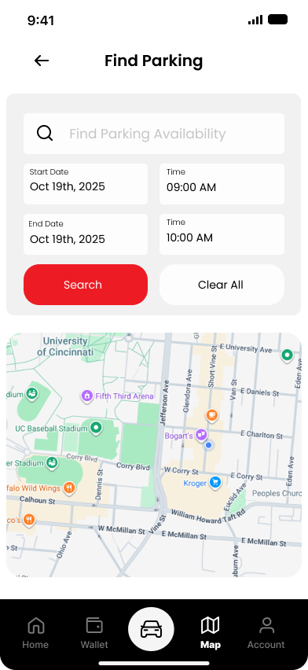
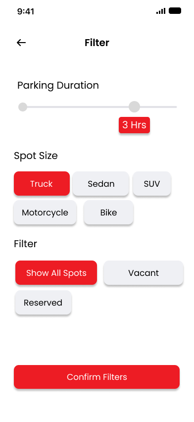
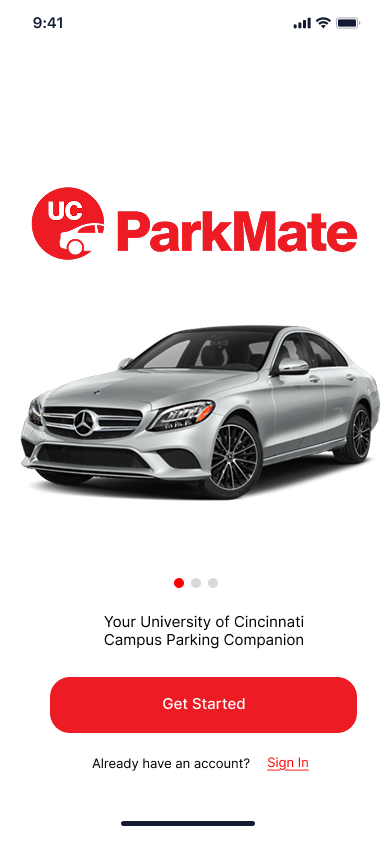

Student-designed concept app
Live garage discovery
Real-time campus availability with a clean map-first search flow.
Guided booking
Filters, level selection, and reservation confirmation in one smooth journey.
Secure account tools
Billing, payment validation, profile details, and notifications in one place.
UC ParkMate Your Campus Parking Companion
A modern parking experience for the University of Cincinnati that helps students, faculty, and visitors search faster, reserve smarter, and manage parking with less friction across campus.
University of Cincinnati parking
.png)


Built for the University of Cincinnati, ParkMate brings together parking discovery, reservation, billing, and account management in a clean red, white, and black mobile system built around real campus needs.
Find Parking Fast
Search by destination, check nearby garages, and view availability at a glance
The home and map experiences put live University of Cincinnati parking information first, helping users move quickly from arrival to decision without extra clutter.
Reserve Your Spot
From filters to garage-level selection, the booking flow stays simple
Users can narrow the search, choose a spot, and confirm a reservation with screens that feel focused and easy to scan.

Pay Securely
Billing flows cover new cards, validation states, and saved payment methods
The payment experience uses clear form structure and visible feedback to make stored cards and checkout feel trustworthy for daily campus parking.


How It Works
Search -> Select -> Park
The flow is designed for urgency, especially when users are headed to class, an event, or a busy University of Cincinnati garage.
Search
Open the app, search for a destination, and view live nearby parking options.
Select
Filter by duration or vehicle type, then pick a garage and a specific spot.
Park
Confirm the booking, manage payment, and stay informed with smart alerts.

Visual Gallery
A complete prototype shown in modern iPhone-style mockups

Onboarding
Welcomes users with strong branding and a clean call to action.

Create Account
Supports email, Google, and UC login in a simple signup flow.

Sign In
Returns users to the app through a familiar and minimal login screen.
Home Dashboard
Surfaces urgent actions, categories, and closest garages right away.
Map Search
Pairs time selection and live campus map context for fast decisions.
Filter View
Lets users narrow the experience by duration, size, and spot status.
Choose Spot
Highlights available versus reserved spaces with a clear garage layout.
Booking Confirmation
Summarizes reservation details, vehicle info, timing, and payment totals.
Billing Overview
Displays active and expired cards in a bold account management layout.

Card Details
Uses large fields and clear save states for payment management.

Profile
Keeps personal information organized inside a calm account flow.

Account Settings
Brings profile, billing, passes, privacy, security, and support together.
Real-Time Alerts
Parking updates extend beyond the app with contextual notifications
Permission prompts and lock-screen alerts help users react to game day traffic, garage capacity, and changing conditions around the University of Cincinnati campus.


About the Project
Built as a student concept with a focus on usability, accessibility, and campus-specific parking needs
ParkMate is a concept app that rethinks parking across the University of Cincinnati through clearer navigation, stronger visual hierarchy, and a more supportive booking flow from start to finish.